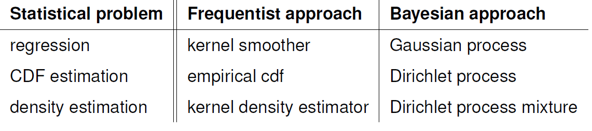

Dirichlet Processes
Review:
In the previous post, we talked about Bayesian Inference and Gaussian processes. We showed that there are methods to obtain posterior:

Bayesian Inference
Usually, the following steps are taken:
- Choose a generative model $p(x|\theta)$ for the data
- Choose a prior distribution $\pi(\theta)$
- After observing data points $\{x_1,x_2,..,x_n\}$ calculate posterior distribution $p(\theta | x_1, ..,x_n)$
Gaussian and Dirichlet processes are infinite versions of Gaussian and Dirichlet distributions.
Gaussian Processes
We also explained that stochastic process is a Gaussian process $m$ if for every finite set $X_1,X_2,..,X_N$, $m(x_1),m(x_2), .., m(x_N)$ is normally distributed.
We also discussed regression, whose Bayesian version are Gaussian processes (i.e., $Y_i = m(X_i)+\epsilon_i$ for $i=1,..,n$).
In the kernel smoothing setting, we also talked about the fact that the frequentist kernel estimator for $m$ is:
$$ \hat{m}(x)= \frac{\sum_{i=1}^nY_iK(\frac{x-x_i}{h})}{\sum_{i=1}^n K(\frac{x-x_i}{h})} $$
where $K$ is a kernel and $h$ is bandwidth.
In the Bayesian method, we need to define a prior distribution over $m$ before we see any data. And then calculate the posterior distribution. We also talk about this magical property of Gaussian: if our data is usually distributed, our conditional and so posterior is also Gaussian.
We also showed that the conditional is Gaussian with some variance, that is, the shaded area in the following plot:
It’s a standard assumption that you put prior $0$ before seeing the data. We also showed that we couldn’t write down prior over function $m$, but we can take samples to evaluate them via $m$ and define covariance matrix $K$. Then the prior will look like this: $$ \pi(m) = (2\pi)^{-n/2}|K|^{-1/2} \exp \Big( -\frac{1}{2} m^T K^{-1}m\Big) $$
In eigenvalue terminology: Let $v$ is eigenvector of $K$ with eigenvalue $\lambda$ then:
$$ \frac{1}{\lambda} = v^T K^{-1}v $$
Recall: smaller eigenvalues are associated with wiggly functions, and larger eigenvalues are associated with smooth functions.
Before we see any data point, the gaussian process favors regression functions that tend to be smooth.
Dirichlet Processes
The Dirichlet process is analogous to the Gaussian processes (infinite dimensional Gaussian vs. infinite dimensional Dirichlet). Gaussian processes are tools for regression functions. Dirichlet processes are tools for densities. Every partition of sample space has a Dirichlet distribution. DPs finesse the problem of choosing the number of components in a mixture model.
A random distribution $F$ is distributed according to a Dirichlet process $\text{DP}(\alpha,F_0)$ for every partition $A_1,..,A_n$ of the sample space, the random vector $F(A_1),..,F(A_n)$ has a Dirichlet distribution:
$$ \text{Dir}(\alpha F_0(A_1), \alpha F_0(A_2),..,\alpha F_0(A_n) ) $$
where $F$ is the amount of mass that $F$ puts on set $A_j$.
What is a DP?
As a particular case, if the sample is the actual line, we can take the partition to be:
$$ \begin{align} A_1 =& \{z: z\leq x\} \\ A_2 =& \{z: z > x\} \end{align} $$
And then:
$$ F(x) \sim \text{Beta}\Big(\alpha F_0(x),\alpha(1-F_0(x))\Big) $$
Example: don’t need to specify the number of topics in a topic model.
Starting point: cumulative density function (CDF)
The empirical distribution of a data set is the probability distribution that places probability mass $\frac{1}{n}$ on each data point $x_1$, $x_2$, .., $x_n$. The empirical CDF is the function:
$$ \hat{F}(x) = \frac{1}{n}\sum_{i=1}^n \mathbb{1} (x_i\leq x) $$
A frequentist $95\%$ confidence band is given by:
$$ \hat{F}(x) \pm \sqrt{\frac{1}{2n}\log \frac{2}{0.05}} $$
KDE
The frequentist estimator for density function is the kernel density estimator:
$$ \hat{f}(x) = \frac{1}{nh} \sum_{i=1}^n K\Big(\frac{X_i-x}{h}\Big) $$
Both the empirical CDF and kernel density estimate involve the data. In the Bayesian approach, we want to construct a prior distribution over these objects before seeing any data.
Solution: Use synthetic or “imaginary” data
We are going to synthesize data and then:
- Step function on these data (Dirichlet Process). Each sample from a Dirichlet process prior has a random collection of weights assigned to an arbitrary data selection.
- Sum up Gaussian bumps (Dirichlet Process Mixture). Each sample from a Dirichlet process mixture has a random collection of weights assigned to a random selection of model parameters.
How to make imaginary data?
Stick-breaking process
At each step, break off a fraction:
$$ V\sim \text{Beta}(1,\alpha) $$
- What’s the mean of $\text{Beta}(1,\alpha)$? Yes, it’s $\mu = \frac{1}{1+\alpha}$
- How much stick is left? Yes, $1-V_1$. Next step? $(1-V_1)V_2$
- And we can continue breaking off with another $\text{Beta}(1,\alpha)$?
- This will not change! $F_0$. and we can sample as many times as we want.
At each step, sample:
$$ X \sim F_0 $$
To draw a single random distribution $F$ from $DP(\alpha,F_0)$:
- Draw $s_1,s_2,..$ independently from $F_0$
- Draw $V_1,V_2,.. \sim \text{Beta}(1,\alpha)$ and set $w_j=V_j\prod_{i=1}^{j-1}(1-V_i)$. (These are stick lengths)
- Let $F$ be the discrete distribution that puts mass $w_j$ at $s_j$
This method was discovered 20 years after proposing the Dirichlet process prior. As the mean equals $1/(1+\alpha)$, larger $\alpha$ means the first stick is enormous, and the weights get smaller. Weights always sum to 1. On the other hand, if $\alpha$ is small, almost all weights are small and only a couple, let’s say, are big.
Suppose we draw data $F$ removed from a Dirichlet process and then sample data from $F$:
$$ \begin{align} F \sim DP(\alpha,F_0) \\ X_1, X_2, .., X_n | F \sim F \end{align} $$
If we sample from $F$, again and again, those data points with high weights have more chance to be selected. So we will have repeats and clusters. This will be captured by the Chinese Restaurant Process (CRP). CRP will allow us to circumvent sampling $F$.
Chinese Restaurant Mnemonic
A customer comes into the restaurant and either:
- Sits at an empty table, with probability proportional to $\alpha$, or
- Sits at the occupied table, with probability proportional to the number of customers already seated.

- Draw $X_1 \sim F_0$
- For $i=2,..,n$: draw
$$ X_i | X_1,..,X_{i-1} = \begin{cases} X\sim F_{i-1} & \text{with probability } \frac{i-1}{i+\alpha-1} \\ X\sim F_{0} & \text{with probability } \frac{\alpha}{i+\alpha-1} \end{cases} $$
where $F_{i-1}$ is the empirical distribution of $X_1,..,X_{i-1}$. This helps us a sample from the marginal distribution over $X$ without explicitly drawing a distribution $F$ from $DP$.
Let $X_1^*,X_2^*,..$ denote unique values of $X_1,X_2,.., X_n$. Define cluster assignment variables $c_1,..,C_n$ where $c_i=j$ means that $X_i$ takes the value $X_j^*$. Let $n_j = |\{i: c_j=j\}|$. Then:
$$ X_n = \begin{cases} X_j^* & \text{with probability } \frac{n_j}{n+\alpha-1} \\ X\sim F_{0} & \text{with probability } \frac{\alpha}{n+\alpha-1} \end{cases} $$
The posterior distribution
Let $X_1,..X_n\sim F$ and let $F$ have prior $\pi=\text{Dir}(\alpha,F_0)$. Then the posterior $\pi$ for $F$ given $X_1,..,X_n$ is:
$$ \text{Dir}(\alpha+n,\hat{F_n}) $$
Where:
$$ \hat{F_n} = \frac{n}{n+\alpha}F_n+\frac{\alpha}{n+\alpha}F_0 $$
Here $F_n$ is the empirical distribution of $X_1,.., X_n$. Also, $F_n$ is like the maximum likelihood estimator (MLE). So the posterior distribution is a mixture of MLE and prior distribution.
Dirichlet Process Mixture
A Dirichlet Process Mixture is a distribution over mixture models. DPMs are Bayesian versions of kernel density estimation. Subject to the curse of dimensionality. In stick breaking, we replace $X_i$ by $\theta_i$. In CRP, we return $X_i^*$ by $\theta_i^*$.
Nonparametric Bayesian mixture model
$$ \begin{align} F\sim & \text{DP}(\alpha,F_0) \\ \theta_1,..,\theta_n | F \sim & F \\ X_i | \theta_i \sim& f(x|\theta_i), i=1,..,n \end{align} $$
Stick breaking process for DPM
- Draw $\theta_1,\theta_2,..$ independently from $F_0$
- Draw $V_1,V_2,..\sim \text{Beta}(1,\alpha)$ and set $w_j=V_j\prod_{i=1}^{j-1} (1-V_i)$
- Let $f$ be the (infinite) mixture model:
$$ f(x) = \sum_{j=1}^{\infty} w_j f(x|\theta_j) $$
Chinese restaurant processes for a DPM
- Draw $\theta_1\sim F_0$
- For $i=2,..,n$: draw
$$ \theta_i | \theta_1,..,\theta_{i-1} = \begin{cases} \theta\sim F_{i-1} & \text{with probability } \frac{i-1}{i+\alpha-1} \\ \theta\sim F_{0} & \text{with probability } \frac{\alpha}{i+\alpha-1} \end{cases} $$
where $F_{i-1}$ is the empirical distribution of $\theta_1,..,\theta_{i-1}$.
We covered this post in the intermediate machine learning SDS 365/565, Yale University, John Lafferty, where I was TF.